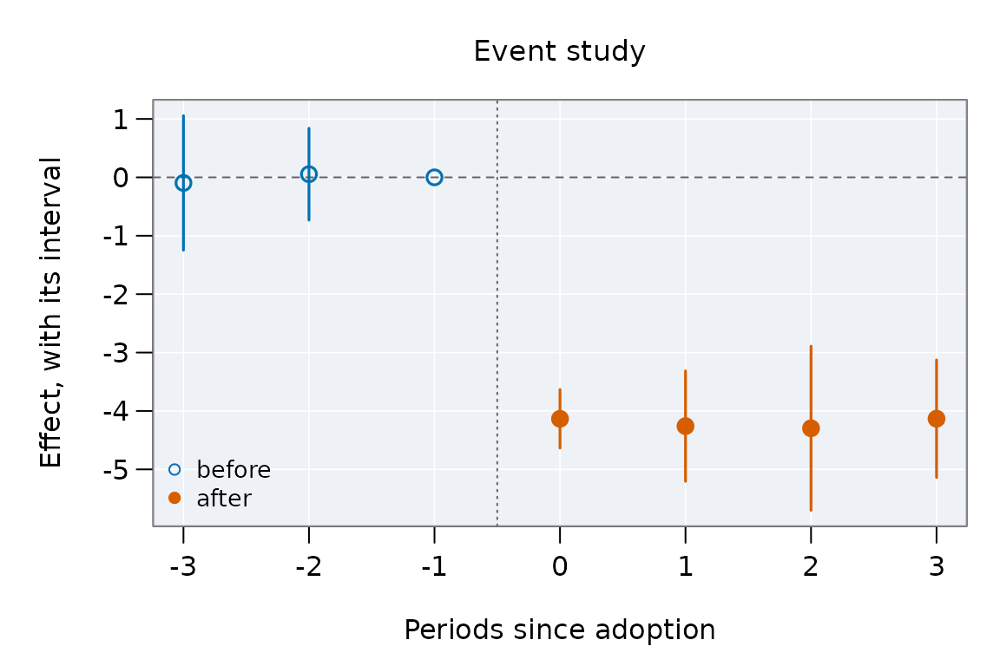
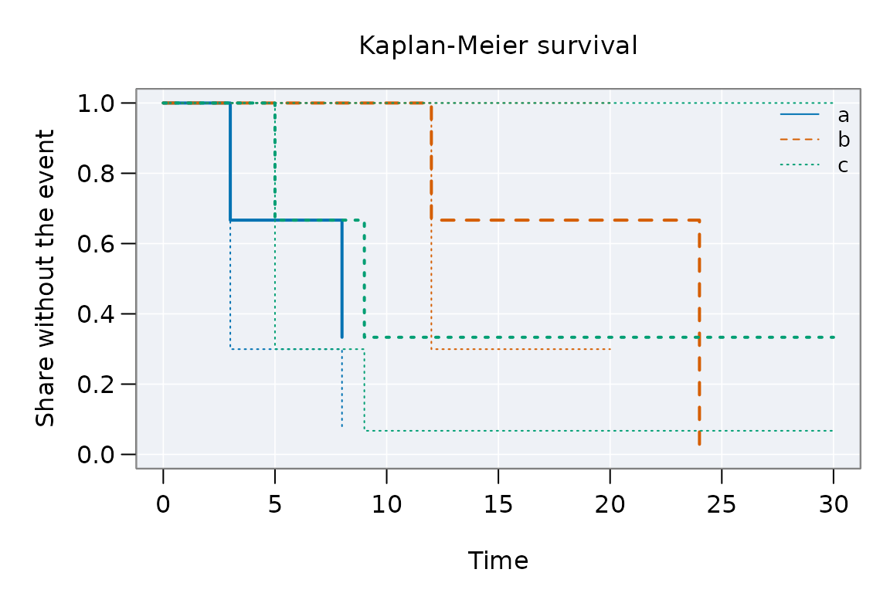
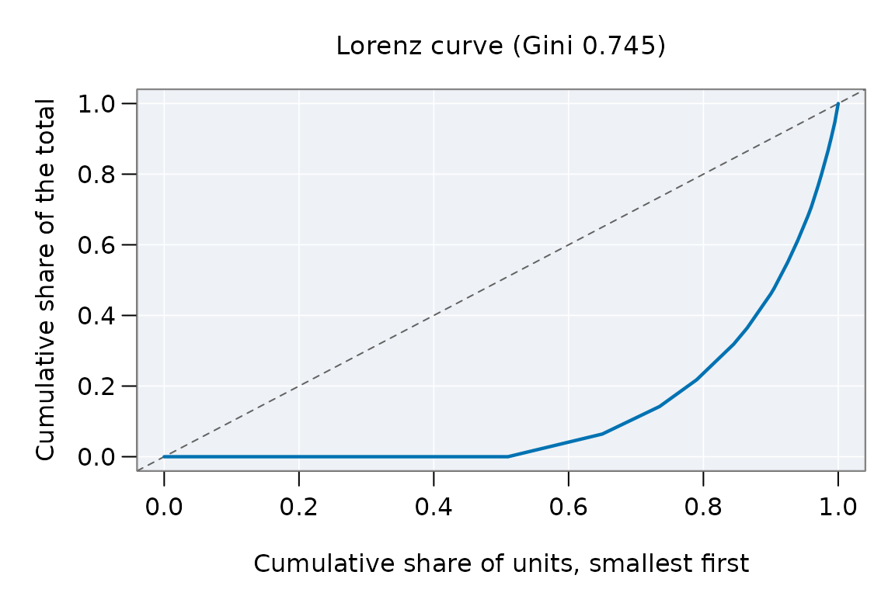

What the package is for
crimlab computes statistics that come up again and again in criminology and sociolegal research: disparity measures for policing, the weight of forensic evidence, clearance rates, and what can and cannot be learnt about release rules and sentences from administrative records. It is written for researchers and analysts in criminology, sociolegal studies, policing, corrections and forensic science. Most of the statistics are short formulas. They are easy to get slightly wrong, and easier still to read as showing more than they do.
Each function checks its arguments, computes the quantity in a
compiled core, and returns a plain data frame or named vector. Its help
page says what the number is and the conditions under which it means
what it seems to mean. Where the result rests on an identity or a bound,
proof() names the machine-checked proof of it.
The examples below use made-up numbers chosen to show the arithmetic. None of them is data, and nothing in this vignette is an empirical finding.
Disparities: the veil of darkness
Suppose, purely for illustration, that a force recorded these traffic stops of two groups of drivers, in daylight and in darkness:
day <- c(white = 600, black = 400)
night <- c(white = 700, black = 300)
v <- vodtst(day, night)
v
#> group ref shday shnight ratio sign
#> 1 white TRUE 0.6 0.7 1.000000 -1
#> 2 black FALSE 0.4 0.3 1.555556 1
pc <- function(x) paste(round(100 * x), "per cent")Black drivers are 40 per cent of daylight stops and 30 per cent of
stops in darkness. The ratio column compares each group’s
odds of being the one stopped in daylight with its odds in darkness,
against the reference group (the first, here): about 1.56 for black
drivers. The idea, due to Grogger and Ridgeway (2006), is that an
officer can see a driver’s race more easily in daylight, so if race
affects who is stopped, the group it works against makes up a larger
share of daylight stops.
Counts usually come from records, not typed-in vectors. A table of
groups by day and night can be given whole,
and every input is matched by group name, never by position, so the
order in which the groups arrive does not matter; the ref
column marks the reference group:
stops <- data.frame(race = c("black", "white", "white", "black"),
light = c("day", "day", "night", "night"),
n = c(400, 600, 700, 300), stringsAsFactors = FALSE)
vodtst(xtabs(n ~ race + light, stops), ref = "white")
#> group ref shday shnight ratio sign
#> 1 black FALSE 0.4 0.3 1.555556 1
#> 2 white TRUE 0.6 0.7 1.000000 -1What this does not license: the ratio isolates the effect of
visibility only if the same people are on the road, in the same
proportions, in daylight and in darkness. If black drivers made up a
larger share of daytime traffic than of night-time traffic, the ratio
would exceed 1 with no bias at all. Studies therefore compare stops at
the same clock times in different seasons, when the same commuters drive
in light and in dark. The shift argument shows how much a
difference in exposure would explain. If, say, black drivers’ share of
traffic were 1.3 times as large in daylight as in darkness:
the adjusted ratio is about 1.2. A shift equal to the ratio, about
1.56, would explain the whole contrast. The counts alone cannot tell
bias from a change in who drives; proof("vodtst") names the
theorem that says so.
A related trap is reading an odds ratio as a relative risk. With an outcome as common as 40 per cent, an odds ratio of 3 corresponds to a much smaller relative risk:
r <- orrisk(or = 3, rate = 0.4, share = 0.5)
r
#> exposed unexposed rr or
#> 0.5282202 0.2717798 1.9435596 3.0000000The relative risk is 1.94, not 3.
Forensics: a match and what it is worth
Take a DNA profile typed at two loci, heterozygous at the first and homozygous at the second, with these (illustrative) allele frequencies and a coancestry coefficient of 0.03:
m <- gtmp(p = c(D3 = 0.1, vWA = 0.2), q = c(0.3, NA),
hom = c(FALSE, TRUE), theta = 0.03)
m
#> $locus
#> locus hom mp
#> 1 D3 FALSE 0.07467851
#> 2 vWA TRUE 0.06607071
#>
#> $log10mp
#> [1] -2.306795
#>
#> $log10lr
#> [1] 2.306795
10^m[["log10lr"]]
#> [1] 202.6728The match probability is the chance that an unrelated person from the same population would share the profile. Its reciprocal, about 200 here, is the likelihood ratio for a single-source match: the profile is that many times as probable if the suspect is the source as if an unrelated person is.
What this does not license: a likelihood ratio is not the probability that the suspect is the source. That needs a prior, and the same ratio gives very different answers under different priors:
lrpost(lr = rep(10^m[["log10lr"]], 3), prior = c(1 / 10, 1 / 1000, 1 / 1e5))
#> [1] 0.957481538 0.168658859 0.002022648Reading the ratio as the posterior is the prosecutor’s fallacy. The
ratio also assumes the alternative source is unrelated to the suspect. A
brother is far more likely to share the profile; kinidx()
gives the weight of two profiles for a stated relationship.
How good is a system that reports likelihood ratios? Given ratios
from validation comparisons whose truth is known, the
log-likelihood-ratio cost scores them, in bits: 1 for a system that
always reports 1, and close to 0 for one that separates the two kinds of
comparison perfectly with ratios far from 1. cllrmin()
recalibrates the ratios with the pool-adjacent-violators algorithm,
which keeps their order, and splits the cost into the cost after
recalibration (min) and the rest (cal):
same <- c(50, 200, 8, 0.5)
diff <- c(0.01, 0.2, 1.5, 0.001)
cm <- cllrmin(same, diff)
cm
#> cllr min cal
#> 0.4239265 0.2500000 0.1739265With these made-up ratios one different-source ratio (1.5) is larger
than one same-source ratio (0.5), so recalibration cannot remove all the
cost: 0.25 bits remain after it, and the other 0.17 come from the ratios
being too large or too small for what they separate. That no
order-keeping recalibration could do better than the
pool-adjacent-violators one is the usual reading of min,
but it is not among the theorems proof("cllrmin") names.
With four comparisons of each kind this says nothing about any real
system; validation needs many comparisons, made under the conditions of
casework. A Tippett plot shows the same ratios as two curves:
tipplt(same, diff)Policing: clearance rates and Simpson’s paradox
Two (invented) years of offences recorded and cleared, by type:
cl <- clrsmp(clra = c(minor = 90, serious = 20),
reca = c(minor = 100, serious = 50),
clrb = c(minor = 19, serious = 60),
recb = c(minor = 20, serious = 140))
cl[["parts"]]
#> part ratea rateb sharea shareb rateeff mixeff
#> 1 minor 0.9 0.9500000 0.6666667 0.125 0.01979167 -0.1687066
#> 2 serious 0.4 0.4285714 0.3333333 0.875 0.01726190 -0.1079303
tot <- cl[["total"]]
tot
#> ratea rateb change rateeff mixeff up
#> 0.73333333 0.49375000 -0.23958333 0.03705357 -0.27663690 2.00000000
#> down simpson
#> 0.00000000 2.00000000Both types clear better in year B than in year A, yet the aggregate
rate falls from about 0.73 to about 0.49. The decomposition shows why:
the rate effect is positive, and the mix effect is negative and larger
than the fall, because recorded work moved toward serious offences,
which clear less often. simpson is 2 because every type
moved one way and the aggregate the other.
What this does not license: the decomposition is arithmetic on the recorded counts. It says nothing about whether the service worked better or worse. Clearance depends on what is recorded, how offences are classified, and what counts as cleared, and any of these can change between years or between services. An aggregate clearance rate compared without the split by type can point the wrong way, as here; the split by type is only as good as the classification.
Corrections: what records say about a sentence
Suppose (again for illustration) 500 people, each given a community sentence or custody, with an indicator of reconviction:
set.seed(1)
z <- sample(c("community", "custody"), 500, replace = TRUE,
prob = c(0.6, 0.4))
y <- rbinom(500, 1, ifelse(z == "custody", 0.55, 0.35))
sb <- sntbnd(y, z, treat = "custody")
sb
#> term share lower upper observed
#> 1 community 0.624 0.208 0.584 0.3333333
#> 2 custody 0.376 0.192 0.816 0.5106383
#> 3 effect NA -0.392 0.608 0.1773050The observed reconviction rates differ by about 0.18. But each person is seen under one sentence only. Without assumptions about who receives which sentence, the reconviction rate everyone would have had under custody is known only to lie within an interval as wide as the share who did not receive custody, and the effect of custody against a community sentence lies in an interval of width exactly 1 that contains 0 (Manski and Nagin 1998).
What this does not license: the observed difference is not the effect of the sentence. Judges choose sentences with information about the person, so the two groups differ before sentencing. Narrowing the interval needs an assumption that the data cannot check, such as random assignment, and the conclusions are only as good as that assumption.
Networks: who offends with whom
Police records list the offenders of each incident. Joining offenders who were recorded together gives a co-offending network, the tie weighted by the incidents they share (Reiss 1988):
inc <- c(1, 1, 1, 2, 2, 3, 3, 4, 4, 5, 5, 6)
off <- c("ana", "ben", "cy", "ana", "ben", "cy", "dee", "dee", "eli",
"eli", "fay", "gus")
g <- coofg(inc, off)
e <- g$edges
e
#> from to w
#> 1 ana ben 2
#> 2 ana cy 1
#> 3 ben cy 1
#> 4 cy dee 1
#> 5 dee eli 1
#> 6 eli fay 1Gus offended alone: he is a node of the network but in no tie, so the
network functions are given nodes to keep him. Results come
back by name, in the order offenders first appear:
ntdeg(e$from, e$to, w = e$w, nodes = g$nodes)
#> node deg wdeg
#> 1 ana 2 3
#> 2 ben 2 3
#> 3 cy 3 3
#> 4 dee 2 2
#> 5 eli 2 2
#> 6 fay 1 1
#> 7 gus 0 0
ntbtw(e$from, e$to, nodes = g$nodes)
#> node btw
#> 1 ana 0
#> 2 ben 0
#> 3 cy 6
#> 4 dee 6
#> 5 eli 4
#> 6 fay 0
#> 7 gus 0
ntlvn(e$from, e$to, w = e$w, nodes = g$nodes)$memb
#> node comm
#> 1 ana 1
#> 2 ben 1
#> 3 cy 1
#> 4 dee 2
#> 5 eli 2
#> 6 fay 2
#> 7 gus 3Cy and Dee each lie on every path between the two halves, and the
Louvain method splits the network there. ntchg() measures
how cleanly it splits: the conductance of the best cut lies between the
two Cheeger bounds, and the lower one is proved in Lean
(proof("ntchg")).
big <- !(e$from == "gus" | e$to == "gus")
ntchg(e$from[big], e$to[big], w = e$w[big])$bound
#> lambda2 lower upper sweep
#> 0.17307222 0.08653611 0.58834041 0.20000000What this does not license: a recorded tie is two people arrested or charged for the same incident, so the network shows police attention as much as offending. Offenders never caught are missing, and a missing node can change who appears central; betweenness in particular is fragile when ties are missing.
Places: where incidents are and how they spread
Thirty (simulated) burglaries around two centres, in metres on a local grid:
set.seed(2)
xy <- data.frame(x = c(rnorm(20, 1000, 120), rnorm(10, 1800, 60)),
y = c(rnorm(20, 2000, 80), rnorm(10, 2300, 60)))
cs <- cgstat(xy)
cs[c("mx", "my", "sdd")]
#> mx my sdd
#> 1288.2054 2095.6282 434.9568
el <- sdell(xy, c = 2)
el
#> mx my a b angle area
#> 1.288205e+03 2.095628e+03 8.486237e+02 1.912781e+02 3.682120e-01 5.099533e+05The mean centre summarises where the incidents are and the standard
distance deviation how far they spread, about 435 metres. The ellipse
with c = 2 would hold about 86 per cent of bivariate normal
points; here the points are two clusters, so the ellipse describes their
joint spread, not a shape that any cluster has.
nn <- nnidx(xy, win = c(500, 2300, 1600, 2700), nsim = 99, seed = 1)
nn$order[, c("mean", "exp", "ratio", "pclu")]
#> mean exp ratio pclu
#> 1 53.9421 128.4523 0.4199387 0.01The mean nearest-neighbour distance is well below its expectation under complete spatial randomness in the study rectangle, and the Monte Carlo p-value against clustering is small. What this does not license: the expectation depends on the rectangle chosen. A rectangle drawn around the points makes them look less clustered than one covering the whole area at risk, and neither says why the incidents cluster; burglaries follow housing, which is itself clustered.
Risk tools: one score, several kinds of fairness
A (simulated) risk score for 400 people in two groups whose base rates differ:
set.seed(3)
g <- rep(c("a", "b"), each = 200)
y <- rbinom(400, 1, ifelse(g == "a", 0.3, 0.5))
s <- plogis(rnorm(400, ifelse(y == 1, 0.8, -0.8)))
fm <- fair(s, y, g, cut = 0.5)
fm$met[, c("group", "fpr", "fnr", "ppv")]
#> group fpr fnr ppv
#> 1 a 0.1702128 0.1864407 0.6666667
#> 2 b 0.2371134 0.2330097 0.7745098The score is the same function of the outcome in both groups, yet the false positive rates and the predictive values differ, because the base rates do. What this does not license: no single row of this table is “the” fairness of the tool. When base rates differ, equal error rates and equal predictive values cannot all hold at once (Chouldechova 2017); which to equalise is a choice about whose errors matter, not a statistical finding.
Presets: one agency’s layout, any agency’s data
The generic functions take plain vectors; a preset says which columns
of a published dataset feed them. The New York arrest file names the
charge class law_cat_cd and the race
perp_race, so the felony share by race is one call (here on
a made-up excerpt; the presets ship no data):
arr <- data.frame(
perp_race = rep(c("A", "B", "C"), c(50, 30, 20)),
law_cat_cd = c(rep(c("F", "M"), c(20, 30)), rep(c("F", "M"), c(18, 12)),
rep(c("F", "M", "V"), c(6, 12, 2))),
stringsAsFactors = FALSE
)
ft <- ctabx(clprep(arr, "nypd-felony-xtab"))
ft$tab
#> felony other
#> A 20 30
#> B 18 12
#> C 6 14
prop.table(ft$tab, 1)[, "felony"]
#> A B C
#> 0.4 0.6 0.3Another agency’s file with other column names needs no new code, only
a preset of its own, laid out as the rows of clprep()’s
table:
mine <- data.frame(preset = "my-felony", generic = "ctabx",
arg = c("row", "col"), column = c("race", "class"),
recode = c("", "felony=felony;*=other"),
stringsAsFactors = FALSE)
other <- data.frame(race = arr$perp_race,
class = ifelse(arr$law_cat_cd == "F", "Felony", "Less"))
identical(ctabx(clprep(other, mine))$tab, ft$tab)
#> [1] TRUEIndigenous health, wellbeing and the justice system
First Nations, Metis and Inuit people are over-represented in Canada’s police contacts, courts and custody, and the Truth and Reconciliation Commission’s Calls to Action ask for that to end (Calls 30 to 42, on justice) and for the health gaps beside it to close (Call 19). Health and wellbeing are the context any evaluation of a policy, a court programme or a custodial regime has to be read against, so the methods for Statistics Canada’s published tables of Indigenous health, the census profile and the Calls to Action are a part of crimlab, not an addition to it.
Two sets of principles say whose data these are: OCAP(R) of the First
Nations Information Governance Centre (ownership, control, access and
possession) and the CARE Principles for Indigenous Data Governance
(Carroll et al. 2020). The functions follow them: First Nations, Metis
and Inuit are compared one by one and a pooled total is marked
(distinctions-based), a suppressed cell stays suppressed and is never
worked back from totals, wellness is reported beside distress
(welprof(), dualcont(),
frmaud()), and a gap is read as a measure of colonial
policy and unequal services, not as a deficit of the people (Walter and
Andersen 2013; Walter 2016).
A made-up table of a percentage with its published limits, compared group by group with the non-Indigenous population:
d <- data.frame(
group = c("First Nations", "Metis", "Inuit", "Non-Indigenous"),
pct = c(45.8, 52.8, 47.8, 61.5),
lo = c(43.9, 50.6, 43.1, 61),
hi = c(47.7, 55, 52.5, 62),
flag = c("", "", "E", ""),
stringsAsFactors = FALSE
)
indgap(d, "group", "pct", "lo", "hi", qual = "flag")
#> Gap against a reference group
#> -----------------------------
#> Reference: Non-Indigenous
#> Groups: 3
#> Intervals: 95%
#>
#> group estimate refest ratio ratio CI difference difference CI
#> First Nations 45.8 61.5 0.7447 [0.714, 0.777] -15.7 [-17.7, -13.7]
#> Metis 52.8 61.5 0.8585 [0.823, 0.896] -8.7 [-11, -6.44]
#> Inuit * 47.8 61.5 0.7772 [0.704, 0.858] -13.7 [-18.4, -8.97]
#>
#> Below the reference (interval below 1): First Nations, Metis and Inuit *.
#>
#> ratio: the group's estimate over the reference's; difference: the
#> group's less the reference's, in the estimate's own units.
#> Report a gap beside each group's own level, not alone.
#> * use with caution: the source flags the estimate (E, high sampling variability).The estimators of holistic balance (holbal()), wellness
beside distress (dualcont()), the four directions of the
First Nations Mental Wellness Continuum (mhcont()), healing
as a process (healchg()) and connection across places
(connassoc()) put to quantitative use the frameworks of
Professor Suzanne Stewart (Yellowknives Dene First Nation) and Professor
Angela Mashford-Pringle (Timiskaming First Nation) of the University of
Toronto’s Waakebiness-Bryce Institute for Indigenous Health (Stewart
2008; Mashford-Pringle and Stewart 2019). The work stands on theirs; any
error in turning their qualitative work into estimators is the
package’s, not theirs.
Plots: every result draws itself
A result with something to draw has a plot() method. The
event study of a (simulated) by-law adopted by four towns in 2019 and
four in 2021, with four towns that never adopt it:
d <- expand.grid(year = 2015:2024, town = LETTERS[1:12])
i <- match(d$town, LETTERS)
d$first <- rep(c(2019, 2021, NA), each = 4)[i]
d$rate <- 30 + i + 0.5 * (d$year - 2015) -
4 * (!is.na(d$first) & d$year >= d$first) + sin(seq_len(120))
es <- plot(evtst(d$rate, d$town, d$year, d$first, leads = 3, lags = 3))
head(es)
#> t est lo hi
#> 1 -3 -0.09567324 -1.2470766 1.0557301
#> 2 -2 0.05394300 -0.7325173 0.8404033
#> 3 -1 0.00000000 NA NA
#> 4 0 -4.13423655 -4.6354427 -3.6330304
#> 5 1 -4.25980824 -5.2052505 -3.3143660
#> 6 2 -4.29625671 -5.7017379 -2.8907756Periods before adoption are open circles and periods after are filled, in different colours, so the picture reads the same in grey print. The plot returns the numbers it drew, so the same picture can be redrawn with any other tool. Survival curves by group, and the Lorenz curve of incidents over places:
plot(kmrec(c(3, 8, 8, 12, 20, 24, 5, 9, 30), event = c(1, 1, 0, 1, 0, 1,
1, 1, 0), grp = rep(c("a", "b", "c"), each = 3)))

Plots are black and grey on white. plotopt() sets the
look for the session (for example
plotopt(palette = "okabe") for colour), and each plot takes
main, col and pal for one change.
What this does not license: a plot shows the estimate and its interval
as computed; a narrow interval drawn on a clean axis is no more credible
than the assumptions of the method that produced it.
Published correctional tables: presets
Corrections and police services publish their data as tables of counts and as de-identified records, each in a layout of its own. A preset describes one such layout: which column is the count, which the group compared and which the adjustments, how a label becomes a number, which rows a filter keeps. The presets read the published tables; crimlab ships none of them, and the tables below are simulated.
The Ontario Ministry of the Solicitor General publishes its
segregation, restrictive confinement and deaths-in-custody tables (OTIS,
the Offender Tracking Information System) as series a, b, c and d;
clprep() lists a preset for each analysis of them.
prechk() checks a table against a preset first: the columns
it reads, and the labels against the codes the ministry’s data
dictionary lists. A table that fits is returned as it is.
c01 <- data.frame(EndFiscalYear = rep(2020:2022, each = 2),
Gender = rep(c("Female", "Male"), 3),
NumberIndividuals_RestrictiveConfinement =
c(40, 310, 52, 335, 47, 360),
stringsAsFactors = FALSE)
cntreg(clprep(prechk(c01, "otis-c01-cnt"), "otis-c01-cnt"))
#> cntreg: 6 counts; reference 0
#> rate ratios (95% intervals):
#> fit term irr lo hi p sep
#> pois 1 0.1383085 0.1158296 0.1651497 6.153279e-106 FALSE
#> nb 1 0.1383085 0.1158295 0.1651499 6.174131e-106 FALSE
#> negative binomial theta 7655874; AIC Poisson 48.8636, negative binomial 50.86374
bad <- c01[-3]
bad$Gender[2] <- "Unknown"
try(prechk(bad, "otis-c01-cnt"))
#> Error : prechk: the table does not fit preset otis-c01-cnt:
#> * `data` has no column NumberIndividuals_RestrictiveConfinement.
#> * column Gender has labels not among its codes: Unknown.Another agency’s table needs a preset of its own: a few rows, one per argument, and, for the check, the labels its columns may hold. For a made-up service publishing admissions by sex, unit and year (the numbers simulated):
adm <- data.frame(year = rep(2022:2023, each = 4),
sex = rep(c("F", "M"), 4),
unit = rep(c("North", "North", "South", "South"), 2),
admissions = c(12, 140, 9, 122, 15, 151, 11, 118),
stringsAsFactors = FALSE)
own <- data.frame(preset = "ns-cnt", generic = "cntreg",
arg = c("y", "grp", "adj", "adj"),
column = c("admissions", "sex", "unit", "year"),
recode = c("", "f=1;m=0", "fac", "fac"),
units = c("admissions", "", "", ""), stringsAsFactors = FALSE)
codes <- data.frame(column = "unit", value = c("North", "South"),
stringsAsFactors = FALSE)
cntreg(clprep(prechk(adm, own, codes), own))
#> cntreg: 8 counts; reference 0
#> rate ratios (95% intervals):
#> fit term irr lo hi p sep
#> pois 1 0.08851224 0.06568484 0.1192728 3.784566e-57 FALSE
#> nb 1 0.08851224 0.06568468 0.1192731 3.792337e-57 FALSE
#> negative binomial theta 3955779; AIC Poisson 52.97866, negative binomial 54.97879Proofs
proof() lists the theorems behind a function:
p <- proof("clrsmp")
p
#> fn theorem file
#> 1 clrsmp Crimlab.Clearance.agg_eq_weighted lean/Clearance.lean
#> 2 clrsmp Crimlab.Clearance.kitagawa lean/Clearance.lean
#> 3 clrsmp Crimlab.Clearance.change_ge_mix lean/Clearance.lean
#> 4 clrsmp Crimlab.Clearance.fixed_mix_no_reversal lean/Clearance.lean
#> 5 clrsmp Crimlab.Clearance.simpson_witness lean/Clearance.leanThe files ship with the package and can be read in R or checked with Lean (see the README). This is the statement of Kitagawa’s identity, the reason the rate and mix effects always add up to the change:
src <- readLines(system.file(p[["file"]][1], package = "crimlab"),
encoding = "UTF-8")
i <- grep("^theorem kitagawa", src)
writeLines(src[i:(i + 2)])
#> theorem kitagawa (wa wb ra rb : ι → ℝ) (c : ℝ) (ha : ∑ k, wa k = 1) (hb : ∑ k, wb k = 1) :
#> ∑ k, wb k * rb k - ∑ k, wa k * ra k =
#> ∑ k, (wa k + wb k) / 2 * (rb k - ra k) + ∑ k, ((ra k + rb k) / 2 - c) * (wb k - wa k) := byA Lean proof guarantees that the theorem, exactly as stated, follows from its hypotheses over the real numbers. It does not guarantee three other things:
- that the code is free of bugs. The C++ core uses floating-point arithmetic, not real numbers, and could compute something other than the formula proved. The package’s tests check the code against the proved identities, which is evidence, not proof;
- that the statement is the one you need. Read it: a theorem about workload shares that sum to 1 says nothing about shares that do not;
- that your data meet the model’s assumptions. The veil-of-darkness theorem holds when exposure is the same in daylight and darkness; whether it is for a given force and year is a question about the world, not about the proof.
References
Carroll, S. R., Garba, I., Figueroa-Rodriguez, O. L., et al. (2020). The CARE Principles for Indigenous Data Governance. Data Science Journal, 19, 43. https://doi.org/10.5334/dsj-2020-043
Chouldechova, A. (2017). Fair prediction with disparate impact: a study of bias in recidivism prediction instruments. Big Data, 5(2), 153-163. https://doi.org/10.1089/big.2016.0047
Grogger, J. and Ridgeway, G. (2006). Testing for racial profiling in traffic stops from behind a veil of darkness. Journal of the American Statistical Association, 101(475), 878-887. https://doi.org/10.1198/016214506000000168
Kitagawa, E. M. (1955). Components of a difference between two rates. Journal of the American Statistical Association, 50(272), 1168-1194. https://doi.org/10.1080/01621459.1955.10501299
Manski, C. F. and Nagin, D. S. (1998). Bounding disagreements about treatment effects: a case study of sentencing and recidivism. Sociological Methodology, 28(1), 99-137. https://doi.org/10.1111/0081-1750.00043
Mashford-Pringle, A. and Stewart, S. L. (2019). Akiikaa (it is the land): exploring land-based experiences with university students in Ontario. Global Health Promotion, 26(3 suppl), 64-72. https://doi.org/10.1177/1757975919828722
Reiss, A. J. (1988). Co-offending and criminal careers. Crime and Justice, 10, 117-170. https://doi.org/10.1086/449145
Stewart, S. L. (2008). Promoting Indigenous mental health: cultural perspectives on healing from Native counsellors in Canada. International Journal of Health Promotion and Education, 46(2), 49-56.
Truth and Reconciliation Commission of Canada (2015). Calls to Action. Winnipeg.
Walter, M. (2016). Data politics and Indigenous representation in Australian statistics. In T. Kukutai and J. Taylor (eds), Indigenous Data Sovereignty: Toward an Agenda, 79-97. ANU Press.
Walter, M. and Andersen, C. (2013). Indigenous Statistics: A Quantitative Research Methodology. Left Coast Press.